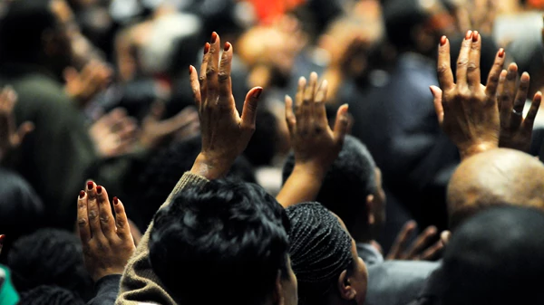

Missions was God’s original plan for the garden of Eden: “And God blessed them. And God said to them, ‘Be fruitful and multiply and fill the earth and subdue it’” (Genesis 1:28). Adam and Eve were meant to expand the kingdom of God. After their fall into sin, even though the world changed, God’s vision didn’t change.
Proverbs 19:21: Read and Understand more

MISSIONS AS AN ACT OF LOVE
Missions work is an extension of God’s love for the world through the church to particular people, following the example of Christ: “For God so loved the world, that he gave his only Son, that whoever believes in him should not perish but have eternal life” (John 3:16)
Mark 5:19-20: Read and Understand more
SERVING THE LORD IN MISSIONS
The Bible speaks of missions as a service to God. Declaring the gospel to the nations is always the natural fruit of Christian worship. Creation itself yearns to hear the gospel spoken. The nations, so lost that they cannot even see their lostness, deeply need God’s mercy in the form of missionaries to bring them the gospel, to bring them hope, and to bring them the message of Christ so that God can work in the hearts of their people.
Psalm 96:1-3: Read and Understand more
WELCOME TO HARVEST HOUSE
Harvest House is a Teens church dedicated to assisting teenagers reach their potential, become responsible and God Fearing.
It is the Teenage church of the Lagos Province 35 Headquarters,Christ Church.
At Harvest House, we believe in the power of the saving grace of Jesus and the confidence and assurance we have in Him.
EVENTS
Discover exciting upcoming events at Harvesthouse! From inspiring gatherings to fun-filled activities, there's something
for everyone. Join us to connect, grow, and celebrate together.
1. To preach the word of God in all places
2. To plant new churches
3. To Takeover and rebuild abandoned churches for God
4. To Deliver the Oppressed
5. To Develop and build human capacity in holiness
PURPOSE
1. The advancement of Christian religion for the benefit of the public through the holding of prayers meetings, teaching and lectures, producing and /or distributing literature on the Christians Faith to enlighten other about the Christian religion.
2. Advancing social and public welfares through the relief of by providing social service like hot meals and other essential to the public.
3. Providing confidential counseling and advice to the public
4. Advancing education by empowering the youth through service such as after school assistance with homework and tutoring.
5. Advancing sport through youth soccer club and kids summer soccer camp.
6. To make heaven
7. To win soul for God
8. To proclaim liberty to the captures
9. To plant churches
10.To take over church from the kingdom of darkness
VISION
1. To Raise role model
2. To empower you and I to discover, develop, release and maximize our potentials in God.
Be Part
Of Our
Story!
See What God Can Do Through
You.
House Fellowship
God is so unique in giving His people ways to fellowship,
witness, and remember what a mighty and merciful God He is.
Evangelism
However, I consider my life worth nothing to me; my only aim
is to finish the race and complete the task the Lord Jesus has given me—the task of testifying
to the good news of God’s grace.
Acts 20:24
Grow with your friend
My command is this: Love each other as I have loved you.
Greater love has no one than this: to lay down one's life for one's friends. You are my friends
if you do what I command.
John 15:12-15
Talk To A Consellor
Harvest House Teens Church
VERTICAL WORSHIP TO THE KING(VWTTK)
April 2024
SEE YOU NEXT YEAR!!!!
Summer Camp 2024: An Unforgettable Experience for Teens
AUGUST 2024
Join us for the annual RCCG Province LP35 Summer Camp, a four-day event dedicated to bringing teenagers together for an
unforgettable experience filled with fun, fellowship, and faith. Our summer camp is designed to provide a perfect blend
of exciting activities and meaningful spiritual growth, ensuring every participant leaves with lasting memories and
strengthened faith.
What to Expect:
Enjoy a delightful evening with delicious food, uplifting music, and heartfelt worship.
Gather around the bonfire for an evening of storytelling, music, fun and games under the stars.
Engage in various sports and outdoor activities that promote teamwork, healthy competition, and
physical fitness. From soccer to relay races, there's something for everyone to enjoy.
Participate in dynamic sessions that cover a range of topics, including faith, personal
development, and life skills.
Deepen your relationship with God through daily worship sessions, Bible studies, and discussions
led by experienced mentors and speakers. Explore different aspects of faith and gain a deeper understanding of God's
word.
Our summer camp promises four days packed with fun, learning, and spiritual growth. Don't miss out on this incredible
opportunity to grow in faith, build lasting friendships, and create cherished memories.
Ready to join us? Click the button below to register now and secure your spot at the RCCG Province LP35 Summer Camp
2024!
Note:
If you are under 18 you are required to fill a consent form with your parents/guardian signature. Download the Consent Form here: Download
×
Summer Camp Registration
Jesus Begins His Final Week
Sermon
Luke 19:28-44
Today, I want invite you to take a three month journey with me on the greatest week in history. This series is devoted to the most important person who’s ever lived on His most important week. This is the week of Christ’s final entry into Jerusalem as well as His death, burial, and resurrection. Bracketed by Palm Sunday on one end and Easter Sunday on the other, this is the most important week in history.
Before we read our passage, allow me to set the scene for day one, Palm Sunday. It’s early Sunday morning some 120 hours before Jesus will be crucified. And while He’s predicted His death numerous times, only He feels the countdown to His death at this point. It is the tenth day of the Hebrew month of Nisan, either April 2, AD 30 or March 29 AD 33 on our calendars. And Scripture records Jesus doing three items on this day:
1) Jesus triumphantly enters into Jerusalem on what we know as Palm Sunday; 2) He enters Jerusalem to look around the Temple late in the day; 3) And He returns back to Bethany. And so begins the greatest week in history…
Today’s Scripture Passage
And when he had said these things, he went on ahead, going up to Jerusalem. 29 When he drew near to Bethphage and Bethany, at the mount that is called Olivet, he sent two of the disciples, 30 saying, ”Go into the village in front of you, where on entering you will find a colt tied, on which no one has ever yet sat. Untie it and bring it here. 31 If anyone asks you, ‘Why are you untying it?’ you shall say this: ‘The Lord has need of it.”’ 32 So those who were sent went away and found it just as he had told them. 33 And as they were untying the colt, its owners said to them, ”Why are you untying the colt?” 34 And they said, ”The Lord has need of it.” 35 And they brought it to Jesus, and throwing their cloaks on the colt, they set Jesus on it. 36 And as he rode along, they spread their cloaks on the road. 37 As he was drawing near-already on the way down the Mount of Olives-the whole multitude of his disciples began to rejoice and praise God with a loud voice for all the mighty works that they had seen, 38 saying, ”Blessed is the King who comes in the name of the Lord! Peace in heaven and glory in the highest!” 39 And some of the Pharisees in the crowd said to him, ”Teacher, rebuke your disciples.” 40 He answered, ”I tell you, if these were silent, the very stones would cry out.”
41 And when he drew near and saw the city, he wept over it, 42 saying, ”Would that you, even you, had known on this day the things that make for peace! But now they are hidden from your eyes. 43 For the days will come upon you, when your enemies will set up a barricade around you and surround you and hem you in on every side 44 and tear you down to the ground, you and your children within you. And they will not leave one stone upon another in you, because you did not know the time of your visitation” (Luke 19:28-44).
It’s the palm branches that make this day unique in so many ways. For centuries, the church has memorialized today, the first day of Holy Week, as Palm Sunday because of the palm branches and cloaks that the people spread out before Jesus as he entered Jerusalem. The Gospel writers tell us a crowd gathered, gushing with excitement, and lined the road in front of Jesus as he slowly rode into the city. As He made his way, one step at a time by the beast of burden on which he sat, a sort of carpet was being sewn together ahead of him. Fresh, green palm branches, presumably picked from nearby trees, and thick, worn clothing, likely from the backs of the crowd, formed a tapestry of endearment toward Israel’s long-awaited messiah.
1. Jesus’ Final Week
All four of the gospels throw the brakes on when they arrive at the final week of Jesus’ life. About forty percent of the gospels focus on this one-week, from Palm Sunday to Easter Sunday. When we consider the final week of Jesus’ earthly life, many of us think of Palm Sunday and Easter Sunday but everything else gets a little fuzzy. In fact, the four gospels record some forty events over the course of these eight days.
1.1 Passover
Passover isn’t for several more days but all of Israel is preparing for it. While the city of Jerusalem was normally around 40,000 in population at this time it would swell up for the Passover celebration. Yet, as Jesus entered the city of Jerusalem on Palm Sunday, Jerusalem would have as many as three times it’s normal size. Think of a miniaturized version of Super Bowl time at Jerry’s World in Arlington and you get the picture. The city was alive with people and excitement as Jesus entered the city for it was the time of the Passover celebration. The great crowd is made up of pilgrims have come to Jerusalem for the Feast for Passover. It was an exciting place. It was a crowded place. And it was a busy place.
1.2 Geography
Jesus enters Jerusalem from the east on this day. In the few days before He’s journey from the ancient city of Jericho, spent the night in Bethany just 1.8 miles from Jerusalem. In all likelihood, Jesus traveled back and forth all week from nearby Bethany and Bethphage. With the high number of visitors inside and around the city of Jerusalem, the poor would have to travel further out to find lodging. Being poor all of His life, Jesus found a place to stay with His friends in Bethany. The Mount of Olives is Jerusalem’s highest peak and it lies to the east of Jerusalem, some 2,650 feet above sea level. Covered with olive trees, the Mount of Olives is perched high over the Kidron Valley and just beyond that is the city walls of Jerusalem. Jesus rode along the ridge of some two miles in length and witnessed an unrivalled look into the Old City of Jerusalem.
1.3 An Interesting Find in Farmersville, TX
Brenda Anderson lost her husband, Harold, of fifty-five years to Alzheimer’s this past August. On the Saturday after Christmas, Brenda leapt into her panty just before the winds slammed her door shut. When she emerged a few seconds later, her panty was the only part of the house that still had an intact ceiling and four walls. The house that was full of memories and thirty-six years of marriage was gone, including her wedding ring. But five days later volunteers found her wedding ring that was missing and presumed lost forever.
More seriously but just as ”coincidental,” was the location of the Mount of Olives is a rich and fertile place for both agriculture but also for biblical events. Jesus sees the Temple in front of Him as well as the Garden of Gethsemane just to His right. He knows what lies ahead of Him that in just a few days, He’ll ponder His fate at this Garden. In little less than a few months, Jesus will return here to ascend to heaven from this very place (Acts 1:9-12). And the Old Testament prophet, Zechariah, predicted the Messiah would return one day in the not so distant future for the Second Coming at the Mount of Olives (Zechariah 14:4-5). Now, Nisan 10 is when families would choose their lambs for sacrifice: ”Tell all the congregation of Israel that on the tenth day of this month every man shall take a lamb according to their fathers’ houses, a lamb for a household” (Exodus 12:3). Just as Jesus enters the ancient city, thousands of lambs were being driven to the city for sacrifice later in the week. A foreshadowing of His eventual sacrifice, the perfect lamb will be slain (John 1:29).
2. A Glorious Charade
You have seen parades before but this isn’t another parade. In fact, this parade is little more than a charade for many in the crowd that day. Despite the small mob of people gathered around him in today’s story, when Jesus died, His tiny failed movement appeared clearly at an end.The scene in front of you doesn’t resemble the kind of triumphal entries the Roman general practiced. There you’d find trophies of war, captives and a white horse. But Jesus’ entry into Jerusalem has none of these things – the parade was a charade in contrast.
2.1 Why a Charade?
When Jesus came to Jerusalem for the last time, He arrived to the adulation of many and the cheering approval of the crowd. Yet, the Triumphal Entry, as it is called, served a deeper purpose than simply a parade in His honor, however. His coming in this manner had been revealed clearly in the Old Testament: the method, the timing, and the meaning.
Look with me briefly at two Old Testament and one New Testament passages. Zechariah 9:9 had told of the King’s coming on the colt of a donkey so that Israel would recognize Him: ”Rejoice greatly, O daughter of Zion! Shout aloud, O daughter of Jerusalem! Behold, your king is coming to you; righteous and having salvation is he, humble and mounted on a donkey, on a colt, the foal of a donkey” (Zechariah 9:9). And Psalms 118:21-29 had announced the meaning of Christ’s arrival, which the crowd realized in their shouts: ”Blessed is he who comes in the name of the Lord! We bless you from the house of the Lord” (Psalm 118:26). But this event also fulfilled Jesus’ promise. Several weeks earlier, some Pharisees came to lure Him back to Judea (Luke 13:31-35). ”At that very hour some Pharisees came and said to him, ‘Get away from here, for Herod wants to kill you.’ And he said to them, ‘Go and tell that fox, ‘Behold, I cast out demons and perform cures today and tomorrow, and the third day I finish my course. Nevertheless, I must go on my way today and tomorrow and the day following, for it cannot be that a prophet should perish away from Jerusalem.’ O Jerusalem, Jerusalem, the city that kills the prophets and stones those who are sent to it! How often would I have gathered your children together as a hen gathers her brood under her wings, and you were not willing! 35 Behold, your house is forsaken. And I tell you, you will not see me until you say, ‘Blessed is he who comes in the name of the Lord!”’ (Luke 13:31-35)
His entry was right on time and just as both He and the prophets predicted.
2.2 The Significance of a Dead Man
Pause and see the significance of this one Man in ways you haven’t considered before. If you were new to our nation and wondered why Abraham Lincoln was recently featured in a movie. If you had asked me about his significance in being featured on the penny and the five dollar bill, I would respond by telling you of his role in the Civil War, I would talk about the tragedy of slavery and how he held the country together when real threats work to rip it apart. You wouldn’t understand the scope of Lincoln’s significance if you didn’t understand his the events of his day and how they affect us today. But I wouldn’t tell you that most impactful thing Lincoln did was to die. Normally when someone dies, their impact on the world immediately begins to recede.
On December 31, 2016 Grammy winner Natalie Cole died in Los Angeles. I remember her song Unforgettable from the early 1990s. It was her father’s hit so many years before and technology allowed her voice to be spliced with her dad’s on the duet. Traci and I would listen to her music while we dated. If someone’s legacy will outlast their life, it usually becomes apparent when they die. Her influence as with her dad’s will wane over time. The influence of those who have died will usually lessen over time, rather than rise.
Yet, Jesus inverted this normal human trajectory. Jesus’ impact was greater a hundred years after his death than during his life. It was greater still after five hundred years. After a thousand years his legacy laid the foundation for much of Europe. After two thousand years He has more followers in more places than ever. Again, if someone’s legacy will outlast their life, it usually becomes apparent when they die.
On the day when Alexander the Great or Caesar Augustus or Napoleon or Socrates or Mohammed died, their reputations were immense. The empire of Rome, where Jesus was born and was murdered, long ago crumbled to ruins. Yet, the number of people who swear allegiance to Jesus and call him Lord has grown through the centuries. This one solitary life has done more to inspire hope and love in our world than anyone.
Mark this story for it tells us that Jesus is an actual king. He’s riding a little horse and people throw their cloaks down, which is what people did for a king. They’re not just saying you are A king but they’re saying He is the ultimate King.
2.3 He’s in Control
The passage is full of irony. ”…he sent two of the disciples, saying, ”Go into the village in front of you, where on entering you will find a colt tied, on which no one has ever yet sat. Untie it and bring it here. If anyone asks you, ‘Why are you untying it?’ you shall say this: ‘The Lord has need of it”’ (Luke 19:29b-31). Jesus is confident the animal will be there. And it isn’t just that He knows an animal will be there but He knows specific details about the kind of animal that will be there. He knows that no one will have ridden the animal as well. Jesus tells the disciples that men will ask why you are taking the animal.
Although His life will be taken in a matter of days, He hasn’t relinquished control of things. You simply tell them, ”’The Lord has need of it”’ (Luke 10:31). Jesus has planned for all contingences. And He knows everything about the situation:
1. He knows the animal’s location;
2. He knows the animal will be tied up;
3. He knows the animal hasn’t been ridden;
4. He tells His followers how to secure the animal.
”No one takes it from me, but I lay it down of my own accord. I have authority to lay it down, and I have authority to take it up again. This charge I have received from my Father” (John 10:18). It’s the greatest week not only because of what happened and but what it accomplished. This is the greatest week in history because it is the epicenter of life change.
3. The Fate of a City
”And when he drew near and saw the city, he wept over it, 42 saying, ”Would that you, even you, had known on this day the things that make for peace! But now they are hidden from your eyes. 43 For the days will come upon you, when your enemies will set up a barricade around you and surround you and hem you in on every side 44 and tear you down to the ground, you and your children within you. And they will not leave one stone upon another in you, because you did not know the time of your visitation” (Luke 19:41-44).
Some four decades after Jesus entered the city on Palm Sunday, the Roman general Titus assembled troops both along the western edges of the old city but also along the very same Mount of Olives to ransack the city. Titus has assembled some four legions to attack the city supported by twenty cohorts of infantry and another group of cavalry. The Romans employed new war machines to hurl boulders against the city walls including battering rams that assaulted the walls. Jewish defenders fought all day and struggled to rebuild the walls at night. Eventually the Romans broke through the outer wall, then the second wall, and finally the third wall. Still the Jews fought, scurrying to the temple as their last line of defense.
The rejection of Jesus is still costly.
Notice carefully that God doesn’t delight in seeking vengeance on those who reject Him. Jesus cries. God hates this more than us.
Prayer
Father, as your Son entered the city so long ago, enter our lives today. Cause our eyes to see your Son’s true worth and beauty. May we rise and celebrate your Son’s true worth. Cause our voices to join with the pilgrims from Galilee from that fateful day to praise you continually.
Give us genuine insight into Who you truly are. Give our hearts sincerity as we pursue the study of your Son’s last week on earth. May our minds and hearts be united in seeing around corners and remove the blinders for so many in our city so they will join in worship of you!
Thank you for sending Jesus Christ to die for us. You have healed us from our addictions and our sinful habits. You have changed us for good. Amen
Conclusion
What happens to you if you jump up on a horse that has never been ridden? Do you know what happens? Does the horse say, ”Where to?” Absolutely not. It jumps and it bucks. Why? Because a horse has to be broken before a normal human being can ride it. But not only do we see Jesus get up on a colt that has never been ridden before, but he rides it right through a screaming crowd. How could this be happening? Why do animals not like it when human beings jump up on them? Why do they need to be ”broken” to human beings? They’re afraid of us. Why are animals naturally in their normal state afraid of us? Because they’re smart. Because they should be afraid of us. Look at how we treat them. If you’ve ever gotten yourself into a relationship with an animal where the animal absolutely and completely trusts you that relationship is far more satisfying than you will be able to understand or explain. They’re afraid.
But Jesus gets up on this little colt, and what happens? Does He break it? He doesn’t break it. He heals it of its fear. This little colt is absolutely fearless in the face of a screaming crowd when Jesus is in its saddle, when Jesus is in the saddle of its life. When Jesus Christ gets on top, when Jesus becomes the ruler, when Jesus gets into the driver’s seat, His power doesn’t break you. He doesn’t coerce you; he heals you. In the midst of this excited crowd, an unbroken animal remains calm under the hands of the one who also calmed the sea. He’s the only one in the universe who can control you with destroying you. This the event points to the peace that is one day coming.
Do you have a friend who is upset about what God has not done? More and more people seem to be upset that God has not stopped some type of tragic event. One young lady is upset because God did not stop her father from dying at a relatively young age. Another father cannot believe in God because God hasn’t stopped his child’s cancer from advancing. ”I cannot believe in a god who allows so much pain and suffering in the world.” Maybe you know someone who wonders why God doesn’t seem to care. For the next 7 Sundays, I want to show you what God has done. Let me show you what God did – Christ died for you.
Nowhere in all the Old Testament does the gospel shine more brilliantly than in Isaiah 53. This one chapter is quoted seven times in the New Testament and it is alluded to another 44 times in the New Testament. This is such a remarkable and unique passage that we are going to spend the next seven weeks allowing Isaiah 53 to prepare our hearts to celebrate Easter.
One of the most surprising items for the earliest Christians was Jesus death on the cross. Yet, shortly after His resurrection, the early Christians were surprised again to discover the Old Testament had predicted Jesus but also His mysterious death for sinners. Can you imagine the impact of knowing much of Jesus’ life was predicted hundreds of years before He existed?
Yes, there’s a lot of pain in this world and focusing on this may convince you God doesn’t care but I want to show you for the next few moments that God does care. This is a poem and it is a quotation from the very voice of God Himself.
Chapter 53 really should begin at verse 13 of Isaiah 52 and it’s there we begin reading.
”Behold, my servant shall act wisely; he shall be high and lifted up, and shall be exalted. 14 As many were astonished at you- his appearance was so marred, beyond human semblance, and his form beyond that of the children of mankind- 15 so shall he sprinkle many nations. Kings shall shut their mouths because of him, for that which has not been told them they see, and that which they have not heard they understand. 1 Who has believed what he has heard from us? And to whom has the arm of the Lord been revealed? 2 For he grew up before him like a young plant, and like a root out of dry ground; he had no form or majesty that we should look at him, and no beauty that we should desire him. 3 He was despised and rejected by men, a man of sorrows and acquainted with grief; and as one from whom men hide their faces he was despised, and we esteemed him not. 4 Surely he has borne our griefs and carried our sorrows; yet we esteemed him stricken, smitten by God, and afflicted. 5 But he was pierced for our transgressions; he was crushed for our iniquities; upon him was the chastisement that brought us peace, and with his wounds we are healed. 6 All we like sheep have gone astray; we have turned-every one-to his own way; and the Lord has laid on him the iniquity of us all. 7 He was oppressed, and he was afflicted, yet he opened not his mouth; like a lamb that is led to the slaughter, and like a sheep that before its shearers is silent, so he opened not his mouth. 8 By oppression and judgment he was taken away; and as for his generation, who considered that he was cut off out of the land of the living, stricken for the transgression of my people? 9 And they made his grave with the wicked and with a rich man in his death, although he had done no violence, and there was no deceit in his mouth. Yet it was the will of the Lord to crush him; he has put him to grief; when his soul makes an offering for guilt, he shall see his offspring; he shall prolong his days; the will of the Lord shall prosper in his hand. Out of the anguish of his soul he shall see and be satisfied; by his knowledge shall the righteous one, my servant, make many to be accounted righteous, and he shall bear their iniquities. Therefore I will divide him a portion with the many, and he shall divide the spoil with the strong, because he poured out his soul to death and was numbered with the transgressors; yet he bore the sin of many, and makes intercession for the transgressors.” (Isaiah 52:13-53:12)
There is a mysterious figure described in this chapter who is to come in the future. Remember, Isaiah’s ministry was around 2,700 years ago or approximately 700 years before Jesus. This is the Mount Everest of Old Testament predictions. Again, this is a mysterious figure who is to come and bring salvation. Isaiah calls this mysterious person a ”Servant” and this ”Servant” achieves something that makes infinite and eternal difference in the lives of people. The New Testament will come many years later and tell us that this mysterious figure is Jesus.
There are five stanzas of three verses each to this poem. Notice that each stanza is little longer than the previous stanza. Let’s focus on the first predictions made in this first stanza in Isaiah 53:13-15 for the next few moments.
Along the path of today’s message, pick up on this theme: Promise made … promise kept.
1. He Succeeds Where Others Fail
1.1 Who Are We Talking About?
Notice Isaiah calls this mysterious person, ”my servant”: ”Behold, my servant…” (Isaiah 53:13a) This is climax of what is known as the ”Servant Songs” in Isaiah: 1) Isaiah 42:1-6; 2) Isaiah 49:1-3; Isaiah 50:4-9.
Who is this Servant? There’s considerable debate over who this chapter is talking about. But it’s not just some ”Bible question” but it is a personal question.
Mitch Glaser had grown up in a Jewish home where he attended Hebrew school in Queens, New York between the ages of eight and thirteen. Like any good Jewish boy, he had his Bar Mitzvah at age thirteen but later he dropped out of college in 1970 and move to California. He explored Eastern religions for a period of time but he received Jesus as his Messiah in November of 1970. He had read Isaiah 53 for the first time then and could not believe this chapter had been in his Hebrew Bible the whole time. He hitchhiked back across the country to his parent’s home in New Jersey to share the gospel with his parents. When he revealed his conversion, his mother and father stared at first, followed by his father gasping out loud and his mother crying. At that point, my parents told me that I had to leave the house and they began laying down the law. Mitch’s mother then told him that he could not go to church, read the New Testament, etc. That evening – supposedly to be his last night at home- Mitch asked his mother if I could show her why he believed Jesus was the Messiah. She said, ”Yes” but that I was not allowed to use the New Testament. So he begins to read Isaiah 53 to his mother. Mitch begins to read and by verse seven Mitch’s mother had fallen asleep. He woke her up and asked if he could keep reading. She sort of nodded in a sleepy stupor and at that point I finished the passage and said, ”So what do you think?” She said, ”I told you not to read the New Testament to me.”
Jesus quotes Isaiah 53:12 between the Last Supper and Gethsemane: ”For I tell you that this Scripture must be fulfilled in me: ‘And he was numbered with the transgressors.’ For what is written about me has its fulfillment” (Luke 22:37). This is only hours before Jesus is crucified. Peter also quotes Isaiah 53:5, ”by his wounds you have been healed” in 1 Peter 2:24 and applies it to Jesus.
1.2 The Success of Jesus
”Behold, my servant shall act wisely…” (Isaiah 53:13a). The words ”shall act wisely” don’t simply mean Jesus will be book-smart or even wise like your mother or father. Yes, Jesus is wise but in addition the prophet predicts that the Messiah will be effective and successful. Maybe your translation of Isaiah 53:13 says something like this: ”Behold, My servant will prosper…” (NASB) God is telling us He will sent a ”Servant” who will accomplish what Israel was not able to accomplish. The prophet predicts Jesus will accomplish God’s will – Jesus will be effective and successful.
When I think of the wisdom of Jesus, I think of Jesus’ ability to navigate through an argument. Over and over again, the gospels show us how strong Jesus’ wisdom was through His teaching. ”And they came and said to him, ”Teacher, we know that you are true and do not care about anyone’s opinion. For you are not swayed by appearances, but truly teach the way of God. Is it lawful to pay taxes to Caesar, or not? Should we pay them, or should we not?” But, knowing their hypocrisy, he said to them, ”Why put me to the test? Bring me a denarius and let me look at it.” And they brought one. And he said to them, ”Whose likeness and inscription is this?” They said to him, ”Caesar’s.” Jesus said to them, ”Render to Caesar the things that are Caesar’s, and to God the things that are God’s.” And they marveled at him” (Mark 12:14-17). Again, when I think of Jesus’ success and wisdom, I think of His wise words. Remember, the enemies of Jesus’ attempted to entangle Jesus with their riddles and clever traps. Yet, Jesus is too wise to be entangled in such matters. Like waving His hand through cobwebs, Jesus’ wisdom baffled His adversaries.
Promise made … promise kept
1.2.1 The Success of Jesus vs. Adam
”And Jesus, full of the Holy Spirit, returned from the Jordan and was led by the Spirit in the wilderness 2 for forty days, being tempted by the devil. And he ate nothing during those days. And when they were ended, he was hungry” (Luke 4:1-2).
Look at three connections Jesus and Adam for a moment.
1) Adam was directly the son of God but Jesus has an even greater relationship to God – He was born of a virgin (Luke 1:35).
2) Where Adam failed, Jesus succeeded. Adam was tempted and failed, bringing all of his people into misery. Jesus, the Second Adam, is tempted, but He does not fail.
3) The first Adam failed in the Garden and was defeated by temptation but the Second Adam, Jesus, succeeded in the Desert. And the first Adam has a companion to help him, but Jesus had no one with Him.
1.2.3 The Success of Jesus vs. Israel
Jesus spends forty days in the desert where Israel spent forty years in the wilderness. The people of Israel were fed manna, a food that God supernaturally dropped out of the skies to feed His people. Jesus, in direct contrast, was also in the wilderness. Despite God providing their food, the people of Israel sinned – they grumbled against God Where Israel ate and failed, Jesus succeeded and was hungry.
I heard it said this week that the relationship between the New Testament and the Old Testament is like a bow tie. Can you picture a bow tie for a moment? God starts with Israel but the people of Israel are more and more unfaithful as time goes by the triangle on the left. Ultimately, all of Israel comes down to just one true Israelite – Jesus. Jesus is the knot in the middle of the bow tie. Isaiah keeps eliminating Israelites until he finds one faithful Israelite who is obedient to God. You can hear Jesus say, ”I am the true vine” because the former vine, Israel, has disqualified itself. From Jesus, a whole new people of God emerge – the triangle on the right. God remakes us into obedient people in Jesus.
Promise made … promise kept.
2. He Starts Small but Finishes Big
”As many were astonished at you- his appearance was so marred, beyond human semblance, and his form beyond that of the children of mankind” (Isaiah 52:14). The traditional hero is viewed as a powerful, mighty conqueror. There’s an expectation that the hero will kill the enemy and conquer evil. God, however, often does things in ways that defy our standards. Isaiah loves to put contrasts in front of us when he’s speaking of the future Servant. Like showing black and white or tall versus short, he wants us to know that the future Messiah will be humiliated before he’s exalted.
Even though the Servant will eventually be exalted, he will not start out this way. Instead, people will be ”appalled” to look at Jesus (Isaiah 53:14). The word ”appalled” is a very strong word – it means to be shattered. It’s actually a word that can be used to mean a city that has just been invaded and destroyed, turned to rubble. When it’s used of a person, for a person to be appalled means to be so shattered by something they’re looking at so as to want to vomit.
There’s this horrible mixture in Jesus’ life as predicted here. Look at how low Jesus begin His life: ”we esteemed him stricken, smitten by God, and afflicted.” (Isaiah 53:4b) Yet, eventually ”…he shall be high and lifted up, and shall be exalted.” (Isaiah 53:13b). This astounding mixture of light and darkness, of success and defeat, of sunshine and storm is always there in the lives of the great servants.
Don’t you dare say, ”Well, if God really loved me and was really working in my life, he wouldn’t let these terrible things happen to me.” Understand this: God’s wise love in your life is completely compatible with the very rough, difficult experience of Jesus.
Jesus’ life began in Bethlehem as small, insignificant and unimportant but grew to eternal and cosmic proportions..
3. He Suffers Where You Don’t Expect it
There are two timeless questions: what is wrong with the human race (what’s wrong with me)? Second, what can be done about it? Let me show how Jesus effects both of these questions.
3.1 Philip, the Ethiopian Eunuch and Acts 8
In Acts 8 we find a man known to us as the ”Ethiopian Eunuch” and he is reading the scroll from Isaiah. ”Now the passage of the Scripture that he was reading was this: ”Like a sheep he was led to the slaughter and like a lamb before its shearer is silent, so he opens not his mouth. In his humiliation justice was denied him. Who can describe his generation? For his life is taken away from the earth” (Acts 8:32-33). The Ethiopian Eunuch is reading from Isaiah 53:7-8. These two verses describe the innocent and submissive death of the Servant. Philip asks, ”Do you understand what you are reading?” (Acts 8:30b) The Ethiopian Eunuch says in effect, ”who is this passage talking about?” (see Acts 8:34). So, Philip connects the dots between Isaiah’s prediction of the Servant’s humiliating death that shocks everyone who sees it: ”And the eunuch said to Philip, ”About whom, I ask you, does the prophet say this, about himself or about someone else?” Then Philip opened his mouth, and beginning with this Scripture he told him the good news about Jesus” (Acts 8:34-35). Far from being applauded by men, Isaiah says He will be ”despised and rejected” (Isaiah 53:3). He would be a ”man of sorrows” and ”acquainted with grief.”
3.2 The Sprinkling the Nations
”so shall he sprinkle many nations. Kings shall shut their mouths because of him, for that which has not been told them they see, and that which they have not heard they understand” (Isaiah 53:15). his mysterious figure will act like an Old Testament priest and will sprinkle people clean. What is so astonishing about Jesus? Why will kings shut their mouths? Because God cares for you and takes a crushing burden off you. The kings of the earth witness the God’s care for lowliest on the earth and they are silenced.
Isaiah 53 ”looks as if it had been written beneath the cross upon Golgotha.” This is the best single chapter in the whole Bible to explain what happened on the cross. ”Jesus was born with the shadow of the cross upon him. With the shadow of the cross upon his heart, he learned to walk, he learned to talk, he learned to work. From his earliest moment upon this earth it was his burden by day, his pallet by night.” R. G. Lee
A moment I told you the story of Mitch Glaser reading this poem to his mother. Remember her reply? – ”I told you not to read the New Testament to me.” Why would she say this? Here is the Suffering Servant of Isaiah 53:
– Who borne our griefs (verse 4)
– Who carried our sorrows (verse 4)
– Who was wounded for our transgressions (verse 5)
– Who was bruised for our iniquities (verse 5)
– Who was chastised for our peace (verse 5)
– Who heals us by His stripes (verse 5)
– Who borne our iniquities (verses 6, 11)
– Who was oppressed, afflicted (verse 7)
– Who was slaughtered (verse 7)
– Who was cut off (verse 8)
– Who was stricken for our transgressions (verse 8)
– Who was bruised by the Lord (verse 10)
– Who was put to grief (verse 10)
– Whose soul was made a sin offering (verse 10)
– Who poured out His soul unto death (verse 12)
– Who was numbered with the transgressions (verse 12)
– Who bore the sin of many (verse 12)
– Who made intercession for the transgressors (verse 12)
Let others focus on what God hasn’t done, you focus on what God has done for you.
Promise made, promise kept.
Conclusion
As the great song Before the Throne of God Above reminds us:
Because the sinless Savior died,?My sinful soul is counted free.?For God the just is satisfied,?To look on Him and pardon me.